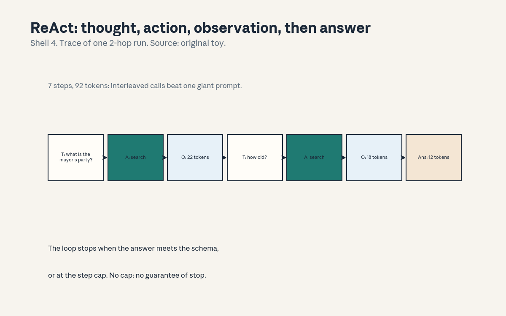
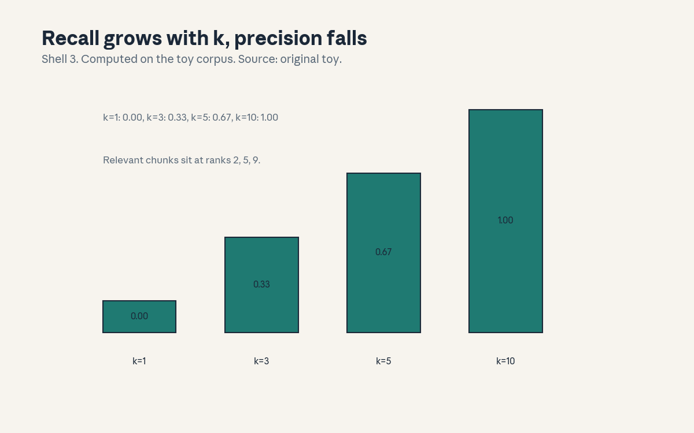
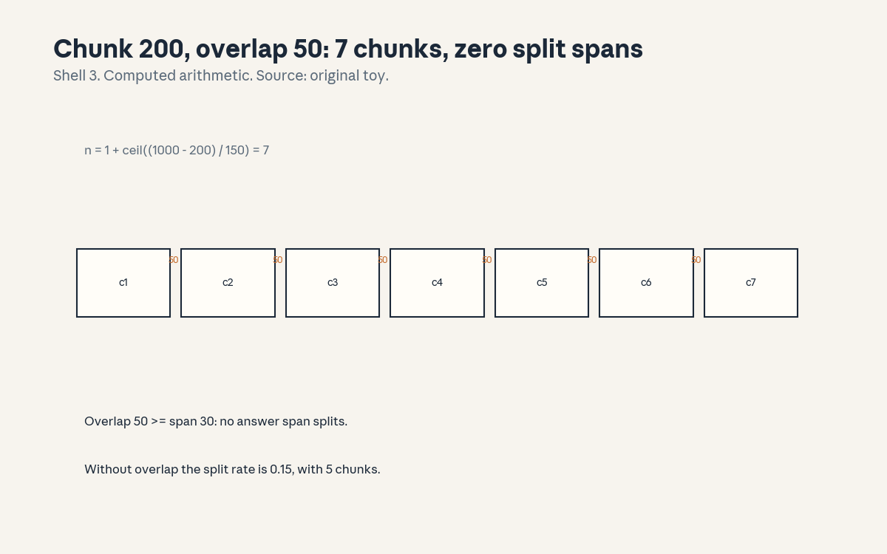

U09 · Tools, agents, and retrieval
U09 , Tools, agents, and retrieval
Local remediation
Bridges: ../shared/prerequisites/p19_retrieval.md (P19, what a
retriever scores), ../shared/prerequisites/p20_tools.md (P20, tool
interfaces and agent state), ../shared/prerequisites/p21_security.md
(P21, permissions and least privilege). This unit is about models
that act: they call tools, read the results, and cite evidence. The
math is small, the discipline is large.
R1. Schema validity: a tool call is valid only when its arguments match the declared schema. The toy validator accepts 4 of 6 calls. Name, arity, types: all three must hold. R2. Recall at k: on the toy corpus (20 chunks, 3 relevant at ranks 2, 5, 9), recall is 0.000 at k = 1, 0.333 at k = 3, 0.667 at k = 5, 1.000 at k = 10. Recall never falls when k grows, precision does. R3. Split rate: for chunk size c, overlap o, answer span s, the fraction of spans split across a boundary is max(0, s - o) / (c - o). At c = 200, s = 30: o = 0 gives 0.15, o = 50 gives 0.00. Overlap at least the span length removes splits.
C01: ReAct pattern
Leaf id cs224n-U09-C01. Claim class REQUESTED-BRANCH.
Status PLANNED / SOURCE ATTRIBUTION PENDING.
-
Source mapping, scope, objectives, dependencies. Maps to the agents session of the Winter 2026 schedule (S12 per
course_map.md). Scope: the interleaved Thought / Action / Observation loop that lets a model use tools. Objectives: define the three step types, run a toy trace, state the stopping rule. Depends on U08 C05 (observable reasoning formats) and P20. -
Motivating question and toy. Question: the model cannot answer from its weights alone, how does it get the missing fact? Toy: a 2-hop question (“the mayor’s party, then the mayor’s age”). Trace: Thought (14 tokens), Action search (8), Observation (22), Thought (10), Action search (8), Observation (18), Answer (12). 7 steps, 92 tokens total.
-
Mental model. The model narrates its plan, acts, reads the result, then plans again. The loop turns a one-shot guess into a program with feedback. The Observation is the only new information in the loop, everything else is format.
-
Objects, symbols, units, shapes, assumptions. Steps: T, A, O. A tool set with typed schemas. A step budget B. Assumption: the tools return what they claim (no verification yet, that is C03). Assumption: the task decomposes into tool-sized steps.
-
Derivation / mechanism. No new math. The mechanism is conditioning: each Thought sees all prior Observations, so the context grows with facts, not with guesses. The loop is a while-loop with the model as the loop body. Termination needs an explicit rule (C11), the loop alone never guarantees it.
-
Computed example. From
compute_u09.py: 7 steps, 92 tokens. The two Observations (22 + 18 = 40 tokens) carry the new facts. The Answer costs 12 tokens. Reading results costs more than acting. -
Algorithm and reference implementation.
react_step(state, tools): render the prompt from state, get the model’s next block, parse Thought / Action / Answer, execute the Action through the tool schema, append the Observation. ~15 lines. Test: the toy trace produces exactly the 7-step sequence. -
Correctness checks and expected output. The trace must alternate T, A, O until an Answer or the budget B. Check: no Action without a preceding Thought (parseable trace). Check: token count matches the sum 92 on the toy.
-
Complexity, memory, statistical efficiency, stability, practical costs. Cost is linear in steps times context length, and the context grows each step (U05 C10’s attention bill). The practical cost is the tool latency, which dominates tokens.
-
Nearest alternatives and selection boundaries. Alternative: plan-then-execute (one plan, then actions, no interleaving). Choose ReAct when observations change the plan (search, debugging). Choose plan-then-execute when the steps are known up front and observations are cheap.
-
Failure case, broken assumption, counterexample. Broken assumption: “the loop stops on its own.” Counterexample: a tool returns “no results” forever and the model rephrases the same query for 50 steps. The fix is a step cap and an answer schema, never trust.
-
Research reading and falsifiable extension. Falsifiable extension: interleave vs plan-then-execute on 40 two-hop questions, equal tool-call budget. Predict: interleave wins when the first search misses. Falsifier: tie (then the tasks were too easy, harden them).
-
Breadth recall, deep oral ladder, unfamiliar transfer. Assessment block:
keys/u09_answers.mdA1 (breadth), L1 (ladder: define the three steps, run the toy trace, derive why observations are the only new info, diagnose the 50-step loop, design the interleave test). -
Lab/exercises with answers separated. E1: implement
react_step, replay the toy trace. E2: add a step cap and show the trace stops at B. Keys inkeys/u09_answers.md. -
Visual units, provenance, accessibility, audit row.

: the 7-step trace, Shell 4, source original toy. Audit row invisual_audit.md.
C02: tool interfaces
Leaf id cs224n-U09-C02. Claim class REQUESTED-BRANCH.
Status PLANNED / SOURCE ATTRIBUTION PENDING.
-
Source mapping, scope, objectives, dependencies. Maps to S12. Scope: how tools are declared to the model. Objectives: write a schema, validate calls, name the three validity checks. Depends on C01, P20.
-
Motivating question and toy. Question: the model emits
search("mayor"), what makes that a real call instead of text? Toy: the schema{name: search, args: {q: string, k: int}}. Six toy calls: 4 valid, 2 invalid (wrong arity, unknown name). -
Mental model. The schema is a contract. The model proposes, the validator disposes. A call that fails validation never executes. This is the same as a type checker, only the programmer is a language model.
-
Objects, symbols, units, shapes, assumptions. A tool: name, argument schema, return schema, side-effect class. Assumption: the schema describes the real tool (a lie in the schema is a lie to the model).
-
Derivation / mechanism. Validation is three checks: the name exists, the arguments match the schema (types and required fields), the caller’s permissions cover the tool (C10). Each check is decidable and cheap. The mechanism is boring on purpose: boring is auditable.
-
Computed example. From
compute_u09.py: 4 of 6 calls valid. The invalid two:searchwith a missing argument,deletewhich is not a declared tool. Validity is not a vibe, it is the three checks. -
Algorithm and reference implementation.
validate(call, registry): check the name, check the args against the schema, return valid/invalid plus the first failing check. ~12 lines. Test: 4/6 with the right failure kinds. -
Correctness checks and expected output. Match 4/6. Check: an unknown tool name fails the name check, not the arg check. Check: extra arguments are rejected when the schema is closed.
-
Complexity, memory, statistical efficiency, stability, practical costs. Validation is constant time per call. The cost of skipping it lets malformed calls reach real systems.
-
Nearest alternatives and selection boundaries. Alternative: free-text tools (the model writes anything, a parser guesses). Choose schemas for anything with side effects. Choose free text only for read-only toys where a miss costs nothing.
-
Failure case, broken assumption, counterexample. Broken assumption: “the model will respect the schema.” Counterexample: the model invents
search_v2because it saw the name in a hallucinated example. The validator must reject, the prompt must show only real names. -
Research reading and falsifiable extension. Falsifiable extension: add a schema reminder after each invalid call vs no reminder, count valid calls over 60 tasks. Predict: reminders raise the valid rate. Falsifier: no change (then the errors are semantic, fix the schema wording).
-
Breadth recall, deep oral ladder, unfamiliar transfer. Assessment block:
keys/u09_answers.mdA2 (breadth), L2 (ladder: write a schema, run the validator, derive the three checks, diagnose the invented tool, design the reminder test). -
Lab/exercises with answers separated. E3: implement
validate, match 4/6. E4: close the schema and show extra args rejected. Keys inkeys/u09_answers.md. -
Visual units, provenance, accessibility, audit row. Claim is a contract (carried in text). Logged as an honest exception in
visual_audit.md.
C03: execution feedback
Leaf id cs224n-U09-C03. Claim class REQUESTED-BRANCH.
Status PLANNED / SOURCE ATTRIBUTION PENDING.
-
Source mapping, scope, objectives, dependencies. Maps to S12. Scope: what the agent does with tool results, including errors. Objectives: define the feedback loop, implement retry with the error text, state when to stop retrying. Depends on C01, C02.
-
Motivating question and toy. Question: the tool returns an error, does the agent learn anything? Toy:
calc("2++2")returnsSyntaxError: unexpected +. The next Thought quotes the error and callscalc("2+2"). The error text is data. -
Mental model. The tool talks back. A good agent treats the error message as an observation, not as a failure. Retry is the loop’s error handling. Two retries with new information each time, then escalate.
-
Objects, symbols, units, shapes, assumptions. An error string, a retry counter, a max-retry cap. Assumption: errors are informative (a bare “failed” teaches nothing). Assumption: the same call will not be retried verbatim.
-
Derivation / mechanism. The mechanism is the context: again: the error text enters the context, so the next Thought can avoid the same mistake. The information gain is the difference between “it failed” and “it failed because”. Verbose errors are a feature.
-
Computed example. Toy (hand, labeled as such): first call fails with the syntax error above, second call succeeds. Two calls, one error message, zero model changes. The feedback did the work that training would have done.
-
Algorithm and reference implementation.
call_with_retry( tool, args, cap=2): validate, execute, on error append the message to the state and ask the model for a revised call. ~10 lines. Test: the toy converges in 2 calls. -
Correctness checks and expected output. The retried call must differ from the failed one (no verbatim retry). Check: the cap stops the loop. Check: the error text appears in the next Thought.
-
Complexity, memory, statistical efficiency, stability, practical costs. Retries multiply tool latency. The cap bounds the worst case. The stability risk: the model “fixes” the call by switching to a different tool with side effects.
-
Nearest alternatives and selection boundaries. Alternative: fail fast (no retry, report the error). Choose retry for transient and formatting errors. Choose fail fast for permission errors and destructive tools.
-
Failure case, broken assumption, counterexample. Broken assumption: “errors are always informative.” Counterexample: the tool returns “error 500” and the model invents a new theory each retry, burning the budget. Cap and escalate.
-
Research reading and falsifiable extension. Falsifiable extension: verbose vs terse error messages, measure success within 2 retries on 40 tasks. Predict: verbose wins. Falsifier: tie (then the model ignores the text, check the trace).
-
Breadth recall, deep oral ladder, unfamiliar transfer. Assessment block:
keys/u09_answers.mdA3 (breadth: state the retry rule and the cap). -
Lab/exercises with answers separated. E5: implement
call_with_retry, show convergence on the toy. E6: set cap = 0 and show fail-fast. Keys inkeys/u09_answers.md. -
Visual units, provenance, accessibility, audit row. Claim is a loop rule (carried in text). Logged as an honest exception in
visual_audit.md.
C04: RAG
Leaf id cs224n-U09-C04. Claim class REQUESTED-BRANCH.
Status PLANNED / SOURCE ATTRIBUTION PENDING.
-
Source mapping, scope, objectives, dependencies. Maps to S12. Scope: retrieve-then-read over a private corpus. Objectives: define the pipeline, compute recall at k, state the stale index failure. Depends on P19, C01.
-
Motivating question and toy. Question: the answer lives in your documents, not in the model’s weights, how do you get it in? Toy: 20 chunks, 3 relevant at ranks 2, 5, 9. Retrieve k, prepend to the prompt, generate. The generator never sees the other 17 chunks.
-
Mental model. The index is external memory. Retrieval is a lookup, generation is the reader. The model is only as good as what retrieval hands it: garbage in, fluent garbage out.
-
Objects, symbols, units, shapes, assumptions. A chunk store, an embedding index, a query encoder, top-k. Scores in [0, 1] or unnormalized dots. Assumption: the answer exists in the corpus (RAG cannot retrieve what was never written).
-
Derivation / mechanism. The pipeline factorizes: P(answer | query) = sum over chunks of P(chunk | query) times P(answer | chunk, query). Top-k approximates the sum with the k best chunks. The approximation is good when the mass concentrates on few chunks.
-
Computed example. From
compute_u09.py: recall at k is 0.000 (k = 1), 0.333 (k = 3), 0.667 (k = 5), 1.000 (k = 10). The first relevant chunk sits at rank 2, so k = 1 finds nothing. k is a recall knob with a precision cost. -
Algorithm and reference implementation.
rag_answer( query, index, k): embed the query, take top-k, format the context, generate with citations (C08). ~10 lines. Test: the toy recall values. -
Correctness checks and expected output. The context must contain exactly the top-k chunks, in rank order. Check: k = 1 yields recall 0.000 on the toy (the honest empty case).
-
Complexity, memory, statistical efficiency, stability, practical costs. Retrieval is sublinear in corpus size (index lookup), generation pays the context bill for k chunks. The practical cost is index freshness: a stale index retrieves yesterday’s truth.
-
Nearest alternatives and selection boundaries. Alternative: long-context stuffing (put everything in the window). Choose RAG when the corpus exceeds the window or changes often. Choose stuffing for small static corpora where retrieval adds failure modes for no gain.
-
Failure case, broken assumption, counterexample. Broken assumption: “the top chunk is the right chunk.” Counterexample: the rank-1 chunk shares keywords but not the answer, the model cites it confidently. Retrieve more, rerank (C07), require citations (C08).
-
Research reading and falsifiable extension. Falsifiable extension: k in {1, 5, 20} on 60 questions, measure exact match. Predict: rises then falls (distraction past some k). Falsifier: monotone rise (then the generator is steady, check the corpus size).
-
Breadth recall, deep oral ladder, unfamiliar transfer. Assessment block:
keys/u09_answers.mdA4 (breadth), L4 (ladder: define the pipeline, compute the recall values, derive the factorization, diagnose the rank-1 trap, design the k sweep). -
Lab/exercises with answers separated. E7: implement
rag_answeron the toy index, match the recall numbers. E8: poison one chunk and show the stale answer. Keys inkeys/u09_answers.md. -
Visual units, provenance, accessibility, audit row.

: recall at k bars, Shell 3, source original toy. Audit row invisual_audit.md.
C05: retriever/generator separation
Leaf id cs224n-U09-C05. Claim class REQUESTED-BRANCH.
Status PLANNED / SOURCE ATTRIBUTION PENDING.
-
Source mapping, scope, objectives, dependencies. Maps to S12. Scope: keeping the two halves of RAG independently testable. Objectives: state the separation, run the swap test, attribute a failure. Depends on C04.
-
Motivating question and toy. Question: the answer is wrong, which half broke? Toy: fix the generator, swap two retrievers (ranks [2,5,9] vs [1,2,3]): recall at k = 5 moves from 0.667 to 1.000 with the generator untouched. The retriever owned the failure.
-
Mental model. Two machines, two contracts. The retriever’s contract: the right chunk is in the top-k. The generator’s contract: given the right chunk, the answer is right. Test each contract with the other half frozen.
-
Objects, symbols, units, shapes, assumptions. Recall at k (retriever metric), faithfulness given gold chunks (generator metric). Assumption: gold chunks exist for the eval set (someone must label them).
-
Derivation / mechanism. The swap test is an ablation: hold the generator fixed, vary the retriever, the delta in end-to-end score is the retriever’s contribution. No joint training is needed to run it. This is Shell 6 thinking: one factor changes.
-
Computed example. Toy (hand, labeled as such): retriever B puts all 3 relevant chunks in the top 3, recall at k = 3 goes from 0.333 to 1.000. Same generator, same questions. Attribution: retriever.
-
Algorithm and reference implementation.
swap_test( retrievers, generator, evalset): score each retriever with the frozen generator, report deltas. ~8 lines. Test: the toy delta is positive for B. -
Correctness checks and expected output. The generator weights must be byte-identical across runs (frozen check). Check: the delta’s sign is stable across two eval halves.
-
Complexity, memory, statistical efficiency, stability, practical costs. The test costs one eval per retriever, no training. The cost of not separating: every failure becomes a blame game and both halves get “fixed” at once.
-
Nearest alternatives and selection boundaries. Alternative: end-to-end joint training of retriever and generator. Choose separation for diagnosis and iteration speed. Choose joint training only when retrieval itself must learn from answer feedback.
-
Failure case, broken assumption, counterexample. Broken assumption: “a better retriever always helps end to end.” Counterexample: the generator ignores the new chunks (position bias toward its priors), end-to-end flat while recall rises. Test the generator’s contract too.
-
Research reading and falsifiable extension. Falsifiable extension: freeze vs fine-tune the generator on gold chunks, measure faithfulness. Predict: fine-tuning helps when the generator ignores context. Falsifier: no gain (then the retriever was the bottleneck, confirm with the swap test).
-
Breadth recall, deep oral ladder, unfamiliar transfer. Assessment block:
keys/u09_answers.mdA5 (breadth: name the two contracts). -
Lab/exercises with answers separated. E9: run the swap test on the toy index. E10: freeze the generator and show byte-identical weights. Keys in
keys/u09_answers.md. -
Visual units, provenance, accessibility, audit row. Claim is a test protocol (carried in text). Logged as an honest exception in
visual_audit.md.
C06: chunking
Leaf id cs224n-U09-C06. Claim class REQUESTED-BRANCH.
Status PLANNED / SOURCE ATTRIBUTION PENDING.
-
Source mapping, scope, objectives, dependencies. Maps to S12. Scope: splitting documents into retrieval-sized pieces. Objectives: compute chunk counts, derive the split rate, choose overlap. Depends on C04, P19.
-
Motivating question and toy. Question: the answer spans 30 tokens, the chunker cuts every 200, what breaks? Toy: doc 1000 tokens. No overlap: 5 chunks, split rate 0.15. Overlap 50: 7 chunks, split rate 0.00.
-
Mental model. The chunker is a cookie cutter. Every cut risks slicing an answer in two. Overlap is insurance: pay extra index tokens so no span falls in a crack.
-
Objects, symbols, units, shapes, assumptions. Chunk size c, overlap o, step c - o, span s. Assumption: answers are short relative to c (true for factoid QA, false for summaries).
-
Derivation / mechanism. Chunk count: 1 + ceil((doc - c) / (c - o)). Split rate: max(0, s - o) / (c - o). When o >= s, the rate is zero: every span fits inside some chunk. The derivation counts, it does not learn.
-
Computed example. From
compute_u09.py: o = 0 gives 5 chunks and split rate 0.15, o = 50 gives 7 chunks and split rate 0.00. Insurance costs 2 extra chunks (40 percent more index tokens) and removes the failure class. -
Algorithm and reference implementation.
chunk(doc, c, o): slide the window, emit pieces. ~6 lines. Test: 5 and 7 chunks on the toy doc, split rates match. -
Correctness checks and expected output. Every token of the doc appears in at least one chunk (coverage check). Check: with o >= s, no 30-token span is split (the R3 guarantee).
-
Complexity, memory, statistical efficiency, stability, practical costs. Index size grows as 1 + overlap fraction. The statistical cost: duplicated text inflates term statistics in sparse retrieval (C07’s problem).
-
Nearest alternatives and selection boundaries. Alternative: semantic chunking (split at topic boundaries). Choose fixed windows for speed and predictability. Choose semantic splits when answers align with sections.
-
Failure case, broken assumption, counterexample. Broken assumption: “smaller chunks are always better.” Counterexample: c = 50 splits every multi-sentence answer, recall collapses even though precision per chunk looks fine. Size to the answer, not to the index.
-
Research reading and falsifiable extension. Falsifiable extension: c in {100, 200, 400} at fixed o, measure recall on 60 questions. Predict: an interior optimum. Falsifier: monotone (then the answers are all short, check).
-
Breadth recall, deep oral ladder, unfamiliar transfer. Assessment block:
keys/u09_answers.mdA6 (breadth), L6 (ladder: define c and o, compute 5 vs 7, derive the split rate, diagnose the c = 50 collapse, design the sweep). -
Lab/exercises with answers separated. E11: implement
chunk, match both counts. E12: verify the zero-split guarantee at o = 50. Keys inkeys/u09_answers.md. -
Visual units, provenance, accessibility, audit row.

: the 7 chunks and the 0.00 split rate, Shell 3, source original toy. Audit row invisual_audit.md.
C07: hybrid/rerank
Leaf id cs224n-U09-C07. Claim class REQUESTED-BRANCH.
Status PLANNED / SOURCE ATTRIBUTION PENDING.
-
Source mapping, scope, objectives, dependencies. Maps to S12. Scope: combining sparse and dense retrieval, then reranking. Objectives: define the fusion, compute a fused score, state the rerank cost. Depends on C04, P19.
-
Motivating question and toy. Question: dense retrieval misses exact terms, sparse misses meaning, what now? Toy: a chunk scores 0.72 sparse, 0.41 dense. Fused at w = 0.5: 0.565. The fusion is a dial, not a discovery.
-
Mental model. Two nets, one pool. Sparse catches the keywords, dense catches the paraphrase. Rerank reads the small pool carefully with a heavy model. Cheap breadth first, expensive depth second.
-
Objects, symbols, units, shapes, assumptions. Sparse score, dense score, fusion weight w, rerank depth m. Assumption: the two scores are on comparable scales (normalize first, or w is meaningless).
-
Derivation / mechanism. Fused score = w times dense + (1 - w) times sparse. The mechanism is a convex mix: w = 0 is pure sparse, w = 1 is pure dense. Rerank rescores the top m with a cross-encoder and keeps the top k.
-
Computed example. Toy (hand, labeled as such): scores (0.72 sparse, 0.41 dense). w = 0.0 gives 0.720, w = 0.5 gives 0.565, w = 1.0 gives 0.410. The weight moves the winner, tune it on a dev set.
-
Algorithm and reference implementation.
hybrid(query, k, w, m): sparse top-m, dense top-m, fuse, rerank top-m, return top-k. ~12 lines. Test: w = 0 reproduces sparse ranking. -
Correctness checks and expected output. The fused pool is the union, not the intersection (a chunk found by either survives). Check: rerank never returns a chunk outside the pool.
-
Complexity, memory, statistical efficiency, stability, practical costs. Rerank costs m heavy forward passes per query. The budget rule: m small enough for latency, large enough to contain the answer (recall at m bounds everything).
-
Nearest alternatives and selection boundaries. Alternative: dense only with a bigger index. Choose hybrid when queries mix exact terms (codes, names) with paraphrase. Choose dense only when the corpus is pure prose.
-
Failure case, broken assumption, counterexample. Broken assumption: “rerank fixes bad retrieval.” Counterexample: the answer sits at rank 200, m = 50, rerank never sees it. Rerank is a polish, not a rescue.
-
Research reading and falsifiable extension. Falsifiable extension: sweep w in {0, 0.5, 1} on 60 queries, measure recall at 10. Predict: 0.5 wins on mixed queries. Falsifier: w = 0 wins (then the queries are keyword-heavy, drop the dense index).
-
Breadth recall, deep oral ladder, unfamiliar transfer. Assessment block:
keys/u09_answers.mdA7 (breadth: write the fusion formula and the rerank rule). -
Lab/exercises with answers separated. E13: implement
hybridon the toy index, match the three fused scores. E14: show a rank-200 answer surviving at m = 50 or not. Keys inkeys/u09_answers.md. -
Visual units, provenance, accessibility, audit row. Claim is a formula (carried in text). Logged as an honest exception in
visual_audit.md.
C08: evidence/citation
Leaf id cs224n-U09-C08. Claim class REQUESTED-BRANCH.
Status PLANNED / SOURCE ATTRIBUTION PENDING.
-
Source mapping, scope, objectives, dependencies. Maps to S12. Scope: answers that point at their sources. Objectives: define citation, compute citation precision on a toy, state what a citation does not prove. Depends on C04.
-
Motivating question and toy. Question: the model answers with a quote, how do you check it? Toy: 4 claims, 3 cite a span that contains them, 1 cites a span that does not. Citation precision 0.75.
-
Mental model. A citation is a pointer, not a proof. It says “look here”, and the reader (or the checker) can verify. A system that cites is auditable, a system that does not is a rumor.
-
Objects, symbols, units, shapes, assumptions. A claim, a span (doc id, start, end), a support relation. Assumption: support is checkable by string match or by a judge (C10’s U10 cousin).
-
Derivation / mechanism. No new math. The mechanism is span grounding: the generator must emit pointers into the retrieved chunks, and a checker verifies each pointer resolves to a span that entails the claim. Two failure classes: dangling pointers, unsupported claims.
-
Computed example. Toy (hand, labeled as such): 3 of 4 citations supported, precision 0.75. The unsupported one quotes the right document but the wrong paragraph. Near is not support.
-
Algorithm and reference implementation.
check_cites( answer, chunks): extract spans, test containment and a simple entailment proxy (claim tokens subset of span tokens). ~12 lines. Test: 0.75 on the toy. -
Correctness checks and expected output. Every citation resolves to a retrieved chunk (no dangling). Check: a claim with no citation is flagged, not passed.
-
Complexity, memory, statistical efficiency, stability, practical costs. Checks are text work, cheap. The cost is generation: citing models write longer answers.
-
Nearest alternatives and selection boundaries. Alternative: no citations, trust the model. Choose citations for anything a human will act on. Choose bare answers for low-stakes chat.
-
Failure case, broken assumption, counterexample. Broken assumption: “a cited answer is a true answer.” Counterexample: the span supports the claim but the span itself is from a poisoned chunk (C04’s stale index). Citations move trust to the corpus, they do not create it.
-
Research reading and falsifiable extension. Falsifiable extension: require citations vs forbid them, measure user error detection on 40 tasks. Predict: citations help users catch model errors. Falsifier: no difference (then users do not click, measure clicks).
-
Breadth recall, deep oral ladder, unfamiliar transfer. Assessment block:
keys/u09_answers.mdA8 (breadth: name the two citation failure classes). -
Lab/exercises with answers separated. E15: implement
check_cites, match 0.75. E16: craft the near-miss citation and show it fails. Keys inkeys/u09_answers.md. -
Visual units, provenance, accessibility, audit row. Claim is a pointer relation (carried in text). Logged as an honest exception in
visual_audit.md.
C09: memory versus context
Leaf id cs224n-U09-C09. Claim class REQUESTED-BRANCH.
Status PLANNED / SOURCE ATTRIBUTION PENDING.
-
Source mapping, scope, objectives, dependencies. Maps to S12. Scope: what the agent remembers across turns and tasks. Objectives: separate memory from context, compute a compression ratio, state the eviction rule. Depends on C01, U05 C10.
-
Motivating question and toy. Question: the conversation is 12000 tokens, the window is 8000, what survives? Toy: a summarizer compresses the raw log to 900 tokens, ratio 13.3. The summary keeps decisions and facts, drops chatter.
-
Mental model. Context is the desk, memory is the filing cabinet. The desk holds what the current step needs. The cabinet holds what future steps might need. Summarization moves papers from the desk to the cabinet.
-
Objects, symbols, units, shapes, assumptions. A context budget B, a memory store, an eviction policy, a compression ratio. Assumption: the summary preserves what matters (the risky assumption, test it).
-
Derivation / mechanism. No new math. The mechanism is lossy compression under a budget: keep the newest N tokens verbatim (recency), summarize the rest (abstraction), pin facts that must not change (anchors). Retrieval over memory (C04’s machinery) beats rereading the whole log.
-
Computed example. From
compute_u09.py: 12000 tokens compress to 900, ratio 13.3. The budget is 8000, so the raw log does not fit but log + summary does (900 + 8000 headroom). -
Algorithm and reference implementation.
compact(state, budget): while over budget, summarize the oldest third, keep anchors. ~10 lines. Test: the toy hits 900 tokens. -
Correctness checks and expected output. Anchors survive compaction byte-identical (pin check). Check: total tokens after compaction are under budget.
-
Complexity, memory, statistical efficiency, stability, practical costs. Summarization costs one extra generation per compaction. The statistical cost: the summary is a lossy bottleneck, details the summary drops are gone.
-
Nearest alternatives and selection boundaries. Alternative: sliding window (drop the oldest, no summary). Choose summarization for long tasks with decisions to keep. Choose the window for short tasks where old tokens are truly dead.
-
Failure case, broken assumption, counterexample. Broken assumption: “the summary keeps what matters.” Counterexample: the summary drops the one constraint the user stated (“never email”), the agent emails. Pin constraints as anchors, never summarize them away.
-
Research reading and falsifiable extension. Falsifiable extension: summary vs sliding window on 30 long tasks, measure constraint violations. Predict: summary wins. Falsifier: tie (then the summaries are bad, inspect them).
-
Breadth recall, deep oral ladder, unfamiliar transfer. Assessment block:
keys/u09_answers.mdA9 (breadth: name the three memory classes). -
Lab/exercises with answers separated. E17: implement
compact, match the 13.3 ratio on the toy. E18: pin an anchor and show it survives. Keys inkeys/u09_answers.md. -
Visual units, provenance, accessibility, audit row. Claim is a budget (carried in text). Logged as an honest exception in
visual_audit.md.
C10: permissions
Leaf id cs224n-U09-C10. Claim class REQUESTED-BRANCH.
Status PLANNED / SOURCE ATTRIBUTION PENDING.
-
Source mapping, scope, objectives, dependencies. Maps to S12. Scope: what the agent is allowed to do. Objectives: define scopes, implement the check, state the least-privilege rule. Depends on C02, P21.
-
Motivating question and toy. Question: the agent wants to run
delete, who says yes? Toy: scopes {read, write}. Thesearchcall passes (read), thedeletecall fails validation at the permission check (not in scope). -
Mental model. Every tool call carries a badge. The badge lists what this run may touch. No badge, no call. The human issues the badge, the agent cannot upgrade it.
-
Objects, symbols, units, shapes, assumptions. A scope set, a tool’s required scope, an approval gate for destructive tools. Assumption: scopes are enforced in code, not in the prompt (the model cannot be trusted with its own leash).
-
Derivation / mechanism. The check is set membership: required(tool) is a subset of granted(run). Destructive tools add an approval step: pause, ask, resume. The mechanism is access control, older than language models.
-
Computed example. Toy (hand, labeled as such): granted {read}.
searchrequires {read}: pass.deleterequires {write}: fail. One set operation per call, zero model judgment involved. -
Algorithm and reference implementation.
authorize(call, scopes): look up the tool’s required scope, test subset, route destructive calls to approval. ~8 lines. Test: the toy pass/fail. -
Correctness checks and expected output. A call with a missing scope never executes (default deny). Check: the approval gate triggers on the destructive class.
-
Complexity, memory, statistical efficiency, stability, practical costs. The check is O(1). The cost is friction: approvals slow the loop. The cost of skipping it is the agent deleting what it should only have read.
-
Nearest alternatives and selection boundaries. Alternative: prompt-only permissions (“please do not delete”). Choose code enforcement for anything irreversible. Choose prompts only for read-only sandboxes.
-
Failure case, broken assumption, counterexample. Broken assumption: “the model will ask before deleting.” Counterexample: the model deletes first and explains after, because the prompt said “be proactive”. Enforcement lives outside the model.
-
Research reading and falsifiable extension. Falsifiable extension: code-enforced vs prompt-only scopes on 30 tasks with a destructive tool present, count violations. Predict: code wins by a wide margin. Falsifier: tie (then the tasks never tempted deletion, harden them).
-
Breadth recall, deep oral ladder, unfamiliar transfer. Assessment block:
keys/u09_answers.mdA10 (breadth: state the subset rule and the default-deny rule). -
Lab/exercises with answers separated. E19: implement
authorize, match the toy. E20: markdeletedestructive and show the approval gate. Keys inkeys/u09_answers.md. -
Visual units, provenance, accessibility, audit row. Claim is an access rule (carried in text). Logged as an honest exception in
visual_audit.md.
C11: loop stopping
Leaf id cs224n-U09-C11. Claim class REQUESTED-BRANCH.
Status PLANNED / SOURCE ATTRIBUTION PENDING.
-
Source mapping, scope, objectives, dependencies. Maps to S12. Scope: when the agent loop ends. Objectives: define the two stop conditions, compute the toy budget, state the no-stop failure. Depends on C01, C03.
-
Motivating question and toy. Question: who decides the agent is done? Toy: stop when the Answer block validates against the schema, or at 10 steps. The toy trace stops at step 7 with a valid Answer.
-
Mental model. Two exits: success (the answer parses) and the fire escape (the step cap). Success is checked, the cap is counted. An agent with only one exit is a gamble.
-
Objects, symbols, units, shapes, assumptions. A step cap B, an answer schema, a validator. Assumption: a valid answer is a good answer (validation checks shape, U08 C12’s lesson).
-
Derivation / mechanism. The loop is
while steps < B and not valid(answer). Termination is guaranteed by the cap, correctness is attempted by the validator. The expected cost is E[steps] times cost per step. -
Computed example. From
compute_u09.py: the toy stops at 7 steps, 92 tokens, under the cap of 10. The 50-step counterexample in C01 shows the cap binding. -
Algorithm and reference implementation.
run_agent(task, B): the while loop with both exits, returns the trace and the stop reason. ~10 lines. Test: toy stops with reason “valid answer”, the broken tool case stops with “cap”. -
Correctness checks and expected output. The stop reason is always one of the two (no silent exits). Check: steps never exceed B.
-
Complexity, memory, statistical efficiency, stability, practical costs. Worst-case cost is B times the per-step cost. Set B from the latency budget, not from hope.
-
Nearest alternatives and selection boundaries. Alternative: model-decided stopping (“I am done”). Choose explicit rules for production. Choose model-decided only in research toys where the stop itself is studied.
-
Failure case, broken assumption, counterexample. Broken assumption: “the model knows when it is done.” Counterexample: the model emits “Final answer” three times with three different answers. The validator, not the model, declares done.
-
Research reading and falsifiable extension. Falsifiable extension: B in {5, 10, 20} on 60 tasks, measure solved within budget. Predict: diminishing returns past 10. Falsifier: linear gains (then the tasks need the steps, raise B).
-
Breadth recall, deep oral ladder, unfamiliar transfer. Assessment block:
keys/u09_answers.mdA11 (breadth: name the two exits). -
Lab/exercises with answers separated. E21: implement
run_agent, show both stop reasons. E22: remove the cap and show the runaway on the broken tool. Keys inkeys/u09_answers.md. -
Visual units, provenance, accessibility, audit row. Claim is a loop invariant (carried in text). Logged as an honest exception in
visual_audit.md.
C12: error attribution
Leaf id cs224n-U09-C12. Claim class REQUESTED-BRANCH.
Status PLANNED / SOURCE ATTRIBUTION PENDING.
-
Source mapping, scope, objectives, dependencies. Maps to S12. Scope: blaming the right component for an agent failure. Objectives: define the three classes, classify 10 failures, state the fix order. Depends on C05.
-
Motivating question and toy. Question: the agent failed, do you fix the retriever, the tool, or the prompt? Toy: 10 failures classified as R (retriever) 4, T (tool) 3, P (policy/prompt) 3. The counts say where the budget goes.
-
Mental model. Autopsy before surgery. Every failure gets one label: the retriever handed the wrong chunk, the tool errored or lied, or the policy chose badly. Fix the biggest class first.
-
Objects, symbols, units, shapes, assumptions. A failure log, a classifier (often a human or a judge), class counts. Assumption: failures have a single dominant cause (often true, sometimes two).
-
Derivation / mechanism. No new math. The mechanism is the taxonomy plus the count: sort classes by frequency, fix in order, re-measure. This is C05’s swap test applied to operations.
-
Computed example. From
compute_u09.py: R 4, T 3, P 3 of 10. The retriever is the biggest class, so the next sprint improves retrieval (C07), not the prompt. -
Algorithm and reference implementation.
attribute( failures): for each, test retriever (was the gold chunk in top-k?), test tool (did it error?), else policy. ~12 lines. Test: the toy 4/3/3 split. -
Correctness checks and expected output. Counts sum to the number of failures. Check: re-running the classifier on the same log gives the same labels (deterministic rules).
-
Complexity, memory, statistical efficiency, stability, practical costs. Attribution costs one inspection per failure. The cost of skipping it: fixing the prompt when the retriever was broken, twice.
-
Nearest alternatives and selection boundaries. Alternative: fix whatever the loudest user complained about. Choose the taxonomy for systems with many failures. Choose vibes for a demo with three users.
-
Failure case, broken assumption, counterexample. Broken assumption: “one label always fits.” Counterexample: the retriever was fine and the tool was fine, but the policy gave up after one try (C11’s cap too tight). The taxonomy needs the loop parameters as context.
-
Research reading and falsifiable extension. Falsifiable extension: fix the top class only, re-measure the failure rate on 40 new tasks. Predict: the rate falls by roughly the class share. Falsifier: no fall (then the labels were wrong, re-audit).
-
Breadth recall, deep oral ladder, unfamiliar transfer. Assessment block:
keys/u09_answers.mdA12 (breadth: name the three classes and the fix order), L12 (ladder: define the classes, classify the toy, derive the fix order, diagnose the mislabeled case, design the re-measure). -
Lab/exercises with answers separated. E23: implement
attribute, match 4/3/3. E24: write the sprint plan from the counts. Keys inkeys/u09_answers.md. -
Visual units, provenance, accessibility, audit row. Claim is a count (carried in text). Logged as an honest exception in
visual_audit.md.
Unit visual map
| Figure | Claim | Shell | Source |
|---|---|---|---|
| ReAct trace: 7 steps, 92 tokens | 4 | original toy | |
| recall at k: 0.000, 0.333, 0.667, 1.000 | 3 | original toy | |
| chunk 200 overlap 50: 7 chunks, split rate 0.00 | 3 | original toy |